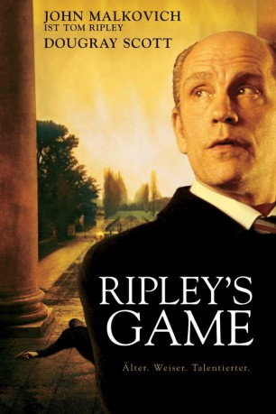

#12205 Ripley's Game
 
 IMDB-Wertung: 6.6 / 10
IMDB-Wertung: 6.6 / 10  Tomatometer: 92
Tomatometer: 92  Metascore: 0
Metascore: 0 
Der talentierte Mr. Ripley hat sich mit seiner schönen Frau in Italien zur Ruhe gesetzt. Als er bei einer Feier seinen Nachbarn Jonathan über Ripleys schlechten Geschmack spotten hört, entschließt er sich zu einem boshaften Spiel: Jonathan soll Ripleys letzten Auftrag ausführen - den Mord an einem russischen Mafiosi. Immer tiefer gerät der rechtschaffende Mann in die Intrigen, die der Meister der Manipulation spinnt...
Jahr: 2002
Dauer: 105 Minuten
FSK: 16
Land: England Studio: Warner Home VideoTonspuren: DD5.1 - ,
Untertitel:
Auflösung: 1080p (1920x1032) Größe: 7598 MB
Genre: Thriller, Drama, Krimi, Mystery
Regisseur: Liliana Cavani
Drehbuch: Charles McKeown, Liliana Cavani, Patricia Highsmith
Soundtrack: Ennio Morricone
Darsteller:
 Ray Winstone als Reeves
Ray Winstone als Reeves John Malkovich als Tom Ripley
John Malkovich als Tom Ripley- Uwe Mansshardt als Terry
 Hanns Zischler als Art Dealer
Hanns Zischler als Art Dealer- Paolo Paoloni als Franco
 Dougray Scott als Jonathan Trevanny
Dougray Scott als Jonathan Trevanny- Chiara Caselli als Luisa Harari
 Lena Headey als Sarah Trevanny
Lena Headey als Sarah Trevanny- Emidio La Vella als Shoe Shop Owner
- Lutz Winde als Ernst
- René Lay als Gangster
- Maurizio Lucà als Franco's Assistant
- Evelina Meghnagi als Maria
- Sam Blitz als Matthew Trevanny
- Nikolaus Dutsch als Dr. Wentzel
- Wilfried Zander als Belinsky
- Hendrikje Fitz als Teacher in Zoo
- Francesca Ventura als Hotel Maid
- Jurij Rosstalnyj als Guleghin
- Ronnie Paul als Gregory
- Thomas Bloem als Bodyguard on Train
- Oliver Hanisch als Gangster
- Sönke Korries als Gangster
Datei: X:\2002\Ripley's Game (2002, FSK16, 1920x1032).mkv seit 30.12.2019
Festplatte: Gemischt-01+Anime
 Es gibt insgesamt 93 Filme in der Gruppe '2002'
Es gibt insgesamt 93 Filme in der Gruppe '2002'